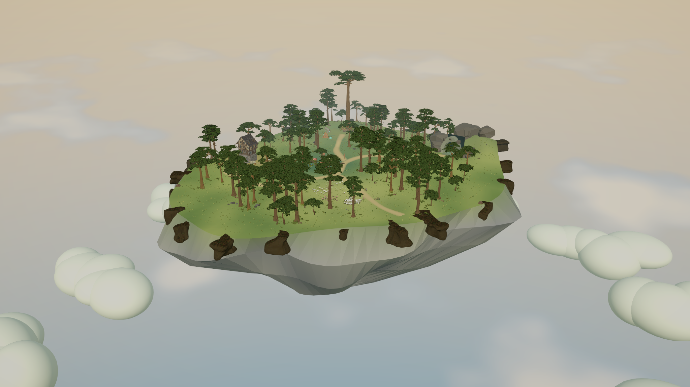
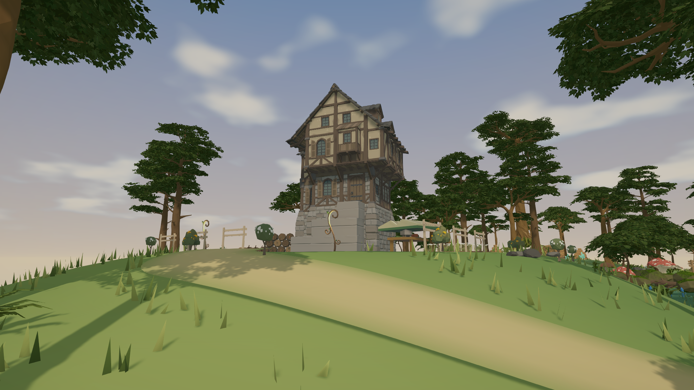
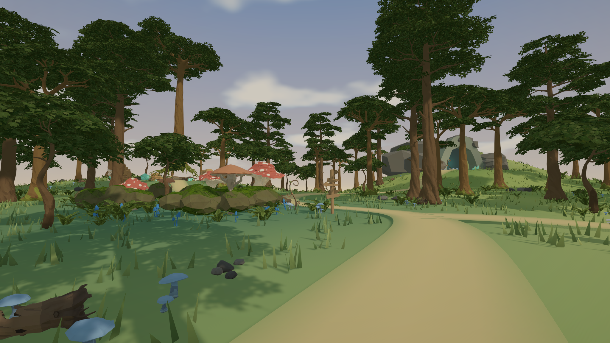
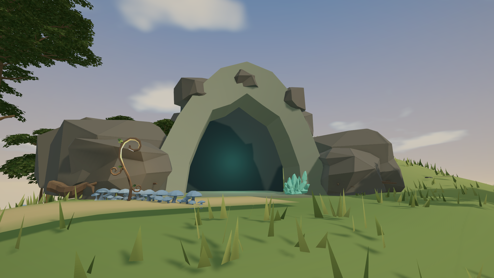
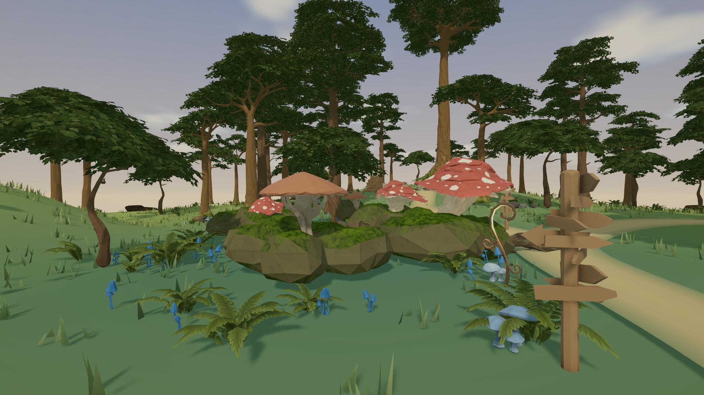
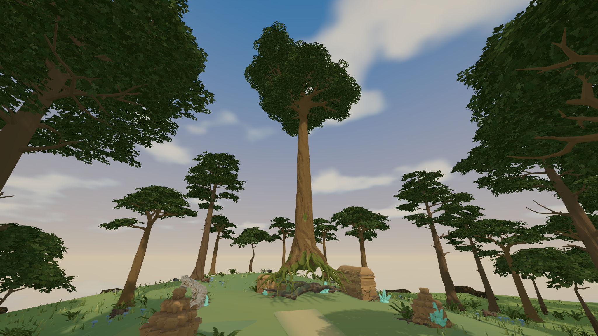
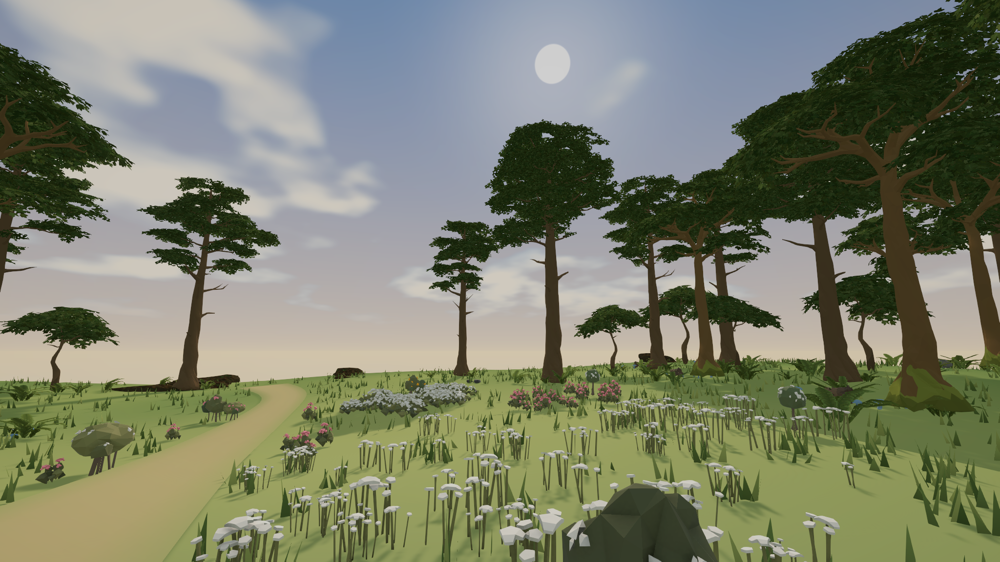
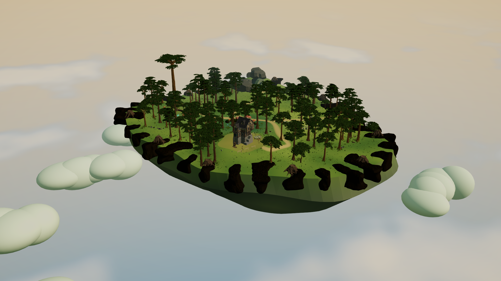

A wood above
the clouds.
Sunlit wildflowers, a shaded mushroom grove, and the ancient guardian's clearing beneath a cloud-filled sky. Actual Synty assets, staged and rendered in Unity 6 through Unity MCP.

The Floating Island
A broken stone silhouette beneath a raised home terrace, open meadow, and woodland threaded with branching trails.


A Place To Return
The cottage exterior, ingredient beds, and outdoor preparation table.


Into The Familiar Wood
Clustered trees, shaded logs, and ingredient habitats, with signs and lanterns at the trail forks.


Something Worth Discovering
A cave entrance tucked into the ridge, hinting at a future expedition below ground.


The Mushroom Grove
Cool green ground, fallen logs, and clustered fungi create a shaded ingredient habitat.


Where The Guardian Sleeps
An ancient tree rises above a moss clearing, with old ruins and Moon Crystals along its edge.


A Break In The Canopy
An open meadow of flower clumps beneath a procedural sky, with a sun aligned to the scene lighting.
See the island overview before this refinement
